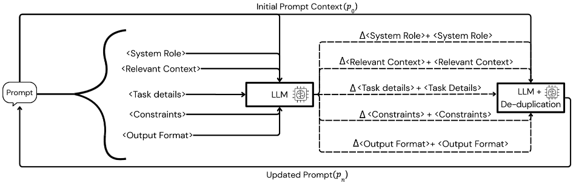
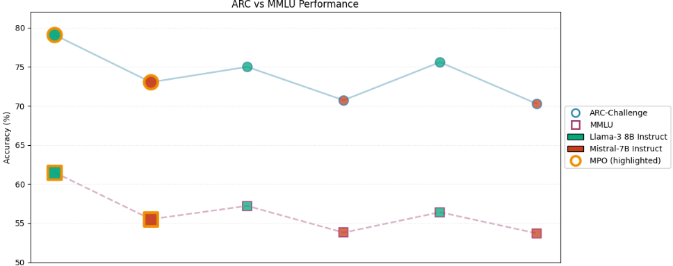

模块化提示优化：基于分节局部文本梯度优化结构化提示
论文针对自动提示优化中长期把提示当作单一文本块整体改写的问题：全局更新难以定位错误来源、无关指令相互干扰、关键信息易在重写中丢失。作者提出 Modular Prompt Optimization（MPO），将提示按固定 schema 拆分为 System Role、Relevant Context、Task Details、Constraints、Output Format 五个语义分节，由 critic 模型在保持其他分节不变的前提下对每个分节独立生成自然语言 textual gradient 式改进，再经 LLM 去重与合并后重组提示，schema 全程固定不变。在 ARC-Challenge 与 MMLU 上以 LLaMA-3 8B-Instruct 和 Mistral-7B-Instruct 为 solver 模型，MPO 一致优于未调优的结构化提示与 TextGrad，且 TextGrad 在 MMLU 上反而劣于未调优提示。核心结论是：把固定提示结构当作归纳偏置、做分节局部优化，比全局改写更稳定、更可解释，尤其适合小型开源模型。
现有自动提示优化方法（尤其 textual gradient / 自改进类方法）通常把提示当作单一整体文本进行全局改写，导致：难以定位具体是提示的哪一部分导致错误、无关指令之间的相互干扰增加、重要信息在重写过程中可能被改变。真实场景中的提示往往混合角色定义、背景信息、任务描述、约束和输出格式等多种目的且缺乏清晰分离，使提示改进缓慢且高度 ad hoc。
MPO 是一个基于 schema 的提示优化框架：将提示分解为固定的五个语义分节（System Role、Relevant Context、Task Details、Constraints、Output Format），schema 在优化全程保持不变，不搜索提示结构、不重排分节；原提示中缺失的分节从原提示中抽取或推断内容进行初始化，不引入新任务信息。每轮迭代中，critic 模型在提供其余分节作为上下文但不修改它们的前提下，为每个分节独立生成自然语言的 textual gradient（分节级改进建议）；分节更新以文本聚合方式叠加，再经 LLM 驱动的去重与合并步骤消除冗余、防止提示膨胀，最后重组为更新后的提示，可按任务需要迭代多轮。
在 ARC-Challenge 与 MMLU 两个基准、LLaMA-3 8B-Instruct 与 Mistral-7B-Instruct 两个 solver 模型上，MPO 均一致优于未调优结构化提示与 TextGrad（论文正文未给出表格中的具体准确率数值）
在 MMLU 上 TextGrad 相对未调优提示出现性能退化，而 MPO 在各模型与任务上保持稳定提升
提升在不修改模型参数、不改变提示结构的情况下取得
实验规模：ARC-Challenge 使用 1,119 条训练样本与 1,172 条测试样本；MMLU 使用 3,000 条训练子集与 1,400 条 held-out 测试样本
与 TextGrad 等对整个提示施加全局 textual gradient 的方法不同，MPO 将反馈限制在分节局部，并以固定提示 schema 作为归纳偏置；与 Task Facet Learning 等会修改提示结构、从标注错误中发现新任务组件的方法不同，MPO 不改变提示拓扑、不引入新任务信息，只优化既有任务信息在稳定结构中的组织、表达与约束方式；与连续 prompt tuning 相比，产出保持自然语言、可解释、可审计。
相关度级别：high
命中能力域：3.2 提示工程
理由：论文直接命中 3.2 提示工程域的'自动提示优化'与'提示词资产管理与复用'：其五分节 schema（角色/上下文/任务/约束/输出格式）与团队日常结构化提示实践高度一致，分节局部 textual gradient 加去重合并提供了一种可解释、可定位错误来源的提示迭代方法，可直接嵌入团队提示词资产的持续优化流程；'固定结构作为归纳偏置、分节独立优化更稳定'的结论对团队提示模板设计与维护方式有直接指导意义，且明确指出 TextGrad 类全局改写在 MMLU 上会退化，提示团队慎用全局重写式优化。
建议动作：深入精读并做内部分享
arXiv:2601.04055v1 [cs.CL] 2026年1月7日
Prith Sharma Austin Z. Henley
卡内基梅隆大学
priths@andrew.cmu.edu, azhenley@cmu.edu
2026年1月8日
细化过程 [29, 20, 27]。这些方法能够保持可读性，并可在黑盒环境下工作，但它们通常将提示词视为单一段落的文本，并对其进行整体更新。因此，难以针对提示词的特定部分，无关指令之间的交互可能会增加，重要信息也可能在重写过程中被改动。
在本文中，我们提出了模块化提示优化（Modular Prompt Optimization, MPO），这是一种基于模式（schema）的提示优化框架，它将提示词视为由固定语义章节组成的结构化对象。MPO 在每次迭代中借助一个评论模型（critic model）应用章节局部的文本梯度，该模型在保持整体模式不变的前提下，为每个章节独立生成有针对性的自然语言改进建议。随后，更新内容在合并时进行去重，以防止提示词膨胀并减少各组成部分之间的干扰。这一设计使优化过程具有局部性、可解释性，并对不受控的重写具有鲁棒性。
我们在两个推理基准测试（benchmark）上对 MPO 进行评估，即 ARC-Challenge [6] 和 MMLU [9, 8]，并使用 LLaMA3 8B-Instruct 和 Mistral-7B Instruct 作为求解器模型（solver model）。在两个基准测试和两个模型上，MPO 始终优于未经调优的结构化提示词和 TextGrad [27]。这些改进是在不修改模型参数、也不改变提示词结构的情况下取得的。结果表明，在保持提示词模式固定的同时独立优化各语义章节，是提升小型开源语言模型（LM）推理性能的一种有效且实用的方法。
1
自动提示优化的第一波浪潮将提示词视为可学习的参数，而非语言对象。[24]、[13]、[14] 和 [17] 等方法在冻结底层语言模型的同时，通过梯度下降优化连续提示嵌入。较新的工作则继续探索嵌入空间中基于梯度的优化方法 [10]。
尽管这些方法在参数效率方面行之有效，但它们产生的提示词不可解释、面向特定任务，且难以审计或复用。由于优化后的提示词存在于潜在嵌入空间中，它们并不对应于显式的自然语言指令。关于提示调优与提示工程的综述强调了这些局限性，指出基于嵌入的方法优化的是潜在控制信号，而非显式的指令语义 [15, 5]。
这些局限性促使研究转向离散提示优化，即在自然语言中直接对提示词进行优化。关于提示挖掘（prompt mining）与提示编程（prompt programming）的早期工作表明，文本形式的提示词可以被系统地搜索和评估 [11, 22]。Automatic Prompt Engineer 表明，大语言模型（LLM）本身即可生成候选提示词并对其进行排序，从而将提示优化表述为语言空间中的搜索问题 [29]。
后续方法探索了更加结构化的优化策略，包括基于束搜索（beam search）的更新以及作用于离散提示词的进化算法 [20, 23]。诸如 [28] 之类的模块化框架进一步将提示优化形式化为针对提示组件的组合过程。这些方法保留了可解释性，并支持黑盒优化，但通常将提示词视为单个整体式的文本块。
另一条并行的研究路线将提示优化重新表述为一个迭代式的自我改进过程，其中语言模型利用自然语言反馈对提示词进行批评和修订。这包括自我精炼（self-refinement）与基于反思（reflection）的方法 [18, 25]，这些方法后来在文本梯度（textual gradients）的概念下被形式化。在这一范式中，语言反馈所扮演的角色类似于连续优化中的梯度信息。
代表性方法包括 [16]、[20]、[27]、[7]，以及诸如 [1] 之类的反思式提示演化方法。这些技术实现了与模型无关的优化，同时保持了可解释性。然而，反馈通常是全局性地应用于整个提示词，这使得难以将失败归因于特定的语义组件，也难以确保关键信息在优化过程中得以保留。
与此同时，面向从业者的提示指南已收敛于一种一致的结构化提示词格式，通常将提示词分解为若干语义章节 [19]、[2]。尽管这些文档并未被定位为优化研究，但它们隐式地编码了一种关于提示词结构的理论，即提示词的不同组件承担着不同的功能角色，应当对它们进行独立的思考。
近期的研究已开始将这一直觉形式化。Task Facet Learning [12] 提出将提示词分解为多个侧面（facet），并从已标注的错误中学习新的任务特定组件。该方法虽然有效，但其修改的是提示词结构本身，并且侧重于从下游性能信号中发现新的任务知识。
相比之下，我们的工作受到结构化提示实践的启发，而非任务侧面发现。我们假设一个固定的、由文档驱动的提示词模式（schema），并研究利用文本梯度式的反馈对每个语义章节进行独立优化如何能够提升性能。我们并不去发现新的任务侧面或改变提示词拓扑结构，而是专注于改进现有任务信息在稳定提示词结构中被组织、表达和约束的方式。这一设计的动机尤其来自小型开源语言模型（LM），它们从显式结构和模块化指令分解中获益尤为显著 [3]。
We propose Modular Prompt Optimization (MPO), a schema-based prompt optimization framework that treats prompts as structured objects composed of semantically distinct components. MPO refines prompts by iteratively improving the content of each component independently, while keeping the overall prompt schema fixed. An overview of the MPO optimization process is shown in Figure 1.
Prompt schema. MPO decomposes each prompt into a fixed set of semantic sections: System Role , Relevant Context , Task Details , Constraints , and Output Format . This decomposition is inspired by widely adopted practitioner prompting guidelines and reflects the observation that different parts of a prompt play distinct functional roles in shaping model behavior. Throughout optimization, the schema itself is held constant. MPO does not search over prompt structures or reorder sections. If a section is missing in the original prompt, it is initialized by extracting or inferring relevant content directly from the original prompt, without introducing new task information.
2

Prompt state and optimization objective. MPO maintains an explicit notion of prompt state. Let
denote the initial structured prompt, where each s ( k ) 0 corresponds to one semantic section. The goal of MPO is to produce a sequence of refined prompt states
where each successive prompt improves task performance while preserving interpretability and structural consistency.
Section-wise textual gradients. At each iteration t , MPO evaluates each prompt section independently using a critic language model. Rather than rewriting the entire prompt, the critic produces textual gradients for each section. Formally, for section k , the critic generates
where C denotes the critic model and p t \ s ( k ) t provides the surrounding prompt context without modifying other sections. Each ∆ s ( k ) t is expressed in natural language and represents a proposed improvement in alignment with the intended task.
Textual Gradients application and consolidation. Section updates are applied additively, yielding an intermediate section:
where ⊕ denotes textual aggregation. As repeated iterations may introduce redundancy or semantically overlapping instructions, MPO applies an LLM-based deduplication and consolidation step:
where D removes redundant content while preserving everything else. The updated prompt state is then reassembled as
Iterative refinement. This process can be repeated for a number of iterations depending on the prompt and task as shown in Figure 1.. By restricting updates to localized, section-specific deltas and consolidating them after each iteration, MPO reduces interference between unrelated prompt components and prevents uncontrolled prompt growth.
3
实验设置。我们在 LLaMA3 8B-Instruct 和 Mistral-7B-Instruct 上评估 MPO，二者作为求解器模型。对于每个模型，我们将 MPO 优化后的提示词与 Textgrad [27] 以及一个遵循相同模式（schema）但不经过迭代精炼的固定基线提示词进行比较。
评估在两个标准推理基准测试（benchmark）上进行：ARC Challenge [6] 和完整的 MMLU 基准测试 [9], [8]。对于 ARC，性能通过多选题上的精确匹配准确率来衡量。对于 MMLU，我们报告所有学科领域的平均准确率。
MPO 对每个模型-数据集对独立应用，生成任务特定且模型特定的优化提示词。这一设置使我们能够同时评估绝对性能提升以及 MPO 改进在不同模型间的一致性。
我们在两个推理基准测试（benchmark）上评估模块化提示优化（Modular Prompt Optimization, MPO）：ARC-Challenge 和 MMLU（全部学科）。实验使用两个开源的指令微调（instruction-tuned）求解器模型进行：LLaMA-3 8B-Instruct 和 Mistral-7B-Instruct。我们将 MPO 与两个基线进行比较：(i) 遵循相同模式（schema）但未经优化的未调优结构化提示词，以及 (ii) TextGrad
对于 ARC-Challenge，我们使用 1,119 个训练样本和 1,172 个测试样本。对于 MMLU，我们使用包含 3,000 个样本的训练子集，并在由 1,400 个样本组成的留出（held-out）测试集上进行评估。
表 1 报告了各模型与各优化方法在 ARC-Challenge 上的测试准确率。在 LLaMA-3 8B-Instruct 和 Mistral-7B-Instruct 两个模型上，MPO 均取得了最强的 ARC-Challenge 性能，始终优于未调优提示词和 TextGrad。
| Model | Untuned | TextGrad | MPO |
|---|---|---|---|
| LLaMA-3 8B-Instruct | 75 | 75.6 | 79.1 |
| Mistral-7B-Instruct | 70.73 | 70.3 | 73.04 |
| Model | Untuned | TextGrad | MPO |
表 2 报告了 MMLU 在所有学科领域上的结果。与 ARC-Challenge 一样，MPO 在两个求解器模型上均持续提升性能。值得注意的是，在 MMLU 上，TextGrad 相对于未调优提示词出现了性能下降。相比之下，MPO 在各模型和各任务上均带来稳定的增益。
| Model | Untuned | TextGrad | MPO |
|---|---|---|---|
| LLaMA-3 8B-Instruct | 57.21 | 56.4 | 61.5 |
| Mistral-7B-Instruct | 53.79 | 53.7 | 55.5 |
| Model | Untuned | TextGrad | MPO |
在两个基准测试和两个求解器模型上，MPO 均持续优于未调优提示词和 TextGrad。这些结果表明，强制采用固定的提示词模式（prompt schema）并应用节局部文本梯度，比全局更新能带来更稳定、更具泛化性的改进。
我们提出了模块化提示优化（Modular Prompt Optimization, MPO），这是一种受模式约束的提示优化框架，它利用节局部文本反馈独立优化提示词的各语义组件，随后进行聚合与去重，从而对提示词进行精炼。通过将提示词结构视为固定的归纳偏置（inductive bias）而非自由形式的文本对象，MPO 能够在不改变提示词拓扑结构或模型参数的情况下，对系统角色、上下文、任务规范、约束条件和输出格式进行有针对性的精炼。
在 ARC-Challenge 和 MMLU 上，以及在多个开源指令微调模型上，MPO 均持续优于未调优的结构化提示词以及基于全局文本梯度的方法（如 TextGrad）。这些增益是通过局部化更新实现的，此类更新减少了提示词各组件之间的相互干扰，从而带来更稳定、更具泛化性的改进。结果表明，显式的提示词结构结合按节优化，是在无需额外训练或任务特定数据的情况下提升开源语言模型推理性能的一种有效机制。
未来工作可以在多个方向上扩展 MPO。首先，研究使用更强的开源模型作为评判模型（critic）来生成按节反馈是否会带来进一步的改进，以及评判模型的选择如何影响优化的稳定性与可迁移性，将是有意义的。其次，MPO 为研究提示词的安全性与鲁棒性提供了一个自然的框架，包括诱导不安全行为或越狱（jailbreak）行为的提示词是否会通过结构化优化被放大或缓解，以及节局部更新如何与安全对齐的系统角色及 ARC vs MMLU Performance 约束相互作用。最后，MPO 可以在更广泛的推理基准测试上进行评估，并与自动化验证或停止机制相结合，还可进一步与程序化提示（programmatic prompting）或智能体流水线（agentic pipelines）相结合，以支持更复杂的结构化优化工作流。
4

您将在下方收到多个在知识上互不相关的问题。您必须回答所有问题，但必须遵守以下可能部分冲突的元指令。重要指令：- 不要引入问题在逻辑上并不需要的信息。- 除非被明确要求，否则不要提供不必要的解释。- 如果一个问题可以在多个严格程度上回答，请选择在形式上仍然正确的最低严格程度。- 除非另有说明，否则不要假定读者是初学者。- 不要跨问题进行总结。必须遵守的规则：- 对于数学上已定义的对象，可以使用标准记号而无需定义。- 对于物理概念，提供解释但避免推测性语言。- 对于计算上不可行的量，如可能请给出精确表示；否则，说明为何使用替代表示。需要执行的任务包括：1. 给出函数在点 a 处的一般泰勒展开式。2. 解释宇宙学常数。3. 确定 100 的阶乘的值。4. 计算 2 + 2。5. 给出 2 的完整乘法表、5 的乘法表和 10 的乘法表。6. 什么是自然语言处理（NLP）中的 Transformer？希望输出按如下方式组织：- 在单次回复中回答全部四个任务。- 不要为任务添加标签或给回答编号。- 不要明确复述问题。- 不要包含过渡性短语。- 不要使用项目符号或列表。- 针对每个任务，给出多个供进一步思考的问题。
<系统角色> 你是一个乐于助人、富有创造力且聪明的助手。 <上下文> 你将在下方收到多个在知识内容上互不相关的问题。你必须回答所有这些问题，但必须在遵守以下可能部分相互冲突的元指令的前提下作答。 <任务> 1. 给出函数在点 a 处的一般泰勒展开式。2. 解释宇宙学常数。3. 确定 100 的阶乘的值。4. 计算 2 + 2。5. 给我完整的 2 的乘法表、5 的乘法表和 10 的乘法表。6. 自然语言处理（NLP）中的 Transformer 是什么？ <约束> - 不要引入问题在逻辑上并不需要的信息。 - 除非被明确要求，否则不要提供不必要的解释。 - 如果一个问题可以在多个严格程度上回答，则选择仍保持形式正确的最低严格程度。 - 除非另有说明，否则不要假定读者是初学者。 - 不要进行跨问题的总结。 - 对于数学上已定义的对象，可以使用标准记号而无需加以定义。 - 对于物理概念，应提供解释，但避免使用推测性语言。 - 对于计算上不可行的量，若可能则给出精确表示；否则，应说明为何使用替代表示。 <输出格式> - 在单次回复中回答全部四个任务。 - 不要对任务加标签，也不要给答案编号。 - 不要明确复述问题。 - 不要包含过渡性短语。 - 不要使用项目符号或列表。 - 针对每个任务，给我多个可供进一步思考的问题。
7
你将在下方收到多个在智力上互不相关的问题。你必须回答所有这些问题，但必须同时遵守需要坚持遵循的元指令和规则。重要指令： - 不要引入问题在逻辑上并不需要的信息。 - 除非被明确要求，否则不要提供不必要的解释。 - 如果一个问题可以在多个严格程度上回答，则选择在形式上仍然正确的最低严格程度。 - 除非另有说明，否则不要假定读者是初学者。 - 不要跨问题进行总结。陈述函数在点 a 处的一般泰勒展开式。解释宇宙学常数。确定 100 的阶乘的值。计算 2 + 2。给出完整的 2 的乘法表、5 的乘法表和 10 的乘法表。NLP 中的 transformer 是什么？提供单一回复，不加标签或编号，并针对每个任务给出多个可供进一步思考的问题。在单次回复中回答全部四个任务。不要给任务加标签，也不要给答案编号。不要明确复述问题。不要包含过渡性短语。不要使用项目符号或列表。
函数 f(x) 在点 a 处的泰勒展开式为：f ( x ) = f ( a ) + f ′ ( a )( x - a ) + (1 / 2) f ′′ ( a )( x - a ) 2 +(1 / 6) f ′′′ ( a )( x - a ) 3 + ... 宇宙学常数是宇宙的一个基本常数，表示真空的能量密度。它用希腊字母 lambda（λ）表示，是真空能量密度的一种度量。宇宙学常数是描述宇宙演化的弗里德曼方程（Friedmann equations）的关键组成部分。100! 等于 100 的阶乘，即从 1 到 100 的所有正整数的乘积。这是一个非常大的数，其精确值为：
2 + 2 等于 4。2 的乘法表是一个乘法表，显示 2 与从 1 到 10 的每个整数相乘的乘积：2 × 1 = 2 2 × 2 = 4 2 × 3 = 6 2 × 4 = 8 2 × 5 = 10 2 × 6 = 12 2 × 7 = 14 2 × 8 = 16 2 × 9 = 18 2 × 10 = 20 5 的乘法表是一个乘法表，显示 5 与从 1 到 10 的每个整数相乘的乘积：5 × 1 = 5 5 × 2 = 10 5 × 3 = 15 5 × 4 = 20 5 × 5 = 25 5 × 6 = 30 5 × 7 = 35 5 × 8 = 40 5 × 9 = 45 5 × 10 = 50 10 的乘法表是一个乘法表，显示 10 与从 1 到 10 的每个整数相乘的乘积：10 × 1 = 10 10 × 2 = 20 10 × 3 = 30 10 × 4 = 40 10 × 5 = 50 10 × 6 = 60 10 × 7 = 70 10 × 8 = 80 10 × 9 = 90 10 × 10 = 100 自然语言处理（NLP）中的 Transformer 是一种用于自然语言处理任务的神经网络架构。它是一种编码器-解码器（encoder-decoder）模型，使用自注意力（self-attention）机制来处理输入序列并生成输出序列。Transformer 架构由 Vaswani 等人在 2017 年的一篇论文中提出，此后已成为许多 NLP 任务中广泛使用且非常有效的架构。进一步的思考题：神经
* Transformer 架构相对于其他网络架构有哪些关键优势？* Transformer 中的自注意力机制是如何工作的？* Transformer 架构在 NLP 中有哪些最常见的应用？
8
函数 f ( x ) 在点 a 处的一般泰勒（Taylor）展开式为：
宇宙学常数是宇宙状态方程中的一项，表示真空的能量密度。它通常用希腊字母 lambda（λ）表示，是对宇宙膨胀阻力的一种度量。
以下是乘法表：
2的乘法表：2, 4, 6, 8, 10,…
5的乘法表：5, 10, 15, 20, 25,…
10的乘法表：10, 20, 30, 40, 50,…
在自然语言处理（NLP）中，transformer 是一种神经网络架构，特别适合自然语言处理任务。它基于自注意力（self-attention）机制，使模型能够同时关注输入序列的不同部分。
进一步思考题：
9
2 条证据未在原文中核对到